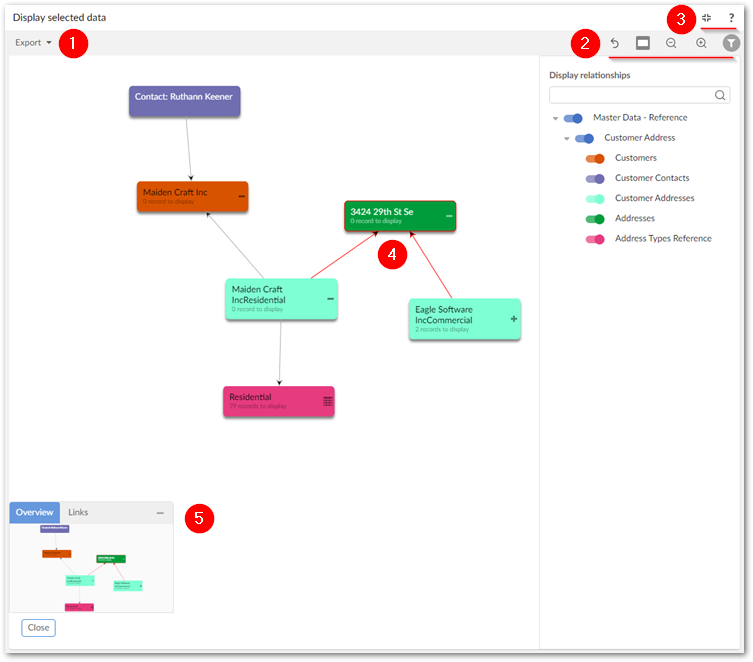
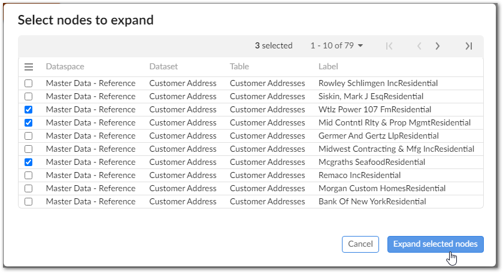

When you generate a data value graph using default functionality—a graph not tied to a custom configuration—the add-on displays the selected values as nodes. From the graph, you can:
Export a PDF, PNG, or SVG of the graph.
Change the node shape.
Expand the graph to fullscreen, zoom to change the magnification level.
Click and drag a node to change its position or graph background to change its orientation.
Expand/collapse nodes and view node details. To view node details, double-click a node.
Filter the graph content to display only the data and relationships you want.
Use the Overview mini-map to re-orient the graph. Additionally, you can move the box to a different corner of the graph by selecting its title bar and dragging.
The following image highlights the available features when viewing a data value graph:
1) | Export a PDF, PNG, or SVG of the current graph. |
2) | Undo your last action, change node shape, zoom and toggle the filter pane (shown). In the filter pane, the search field allows you to search for data values in the graph. As you enter text in the field the list of nodes narrows to only those that include the entered text. Once you find the element you are looking for, select the node to center the graph on it. The filter pane also allows you to toggle display of data model components to hide their corresponding values in the graph. |
3) | Enter and exit fullscreen mode and select the '?' to view the documentation related to data value graphs. |
4) | Expand and collapse relationships by selecting the + or - icons. Double-click a node to open the record detail view. Selected nodes and relationships are highlighted in red. Each node displays the number of additional nodes that will display after selecting the + icon. |
5) | Drag the mini-map in the Overview box to re-orient the graph. You can also drag the box to any of the graph's four corners. |
When expanding a node would result in display of 10 or more nodes, the add-on allows you to select the nodes you want to expand. Selecting the icon displays the following dialog where you can choose the nodes to open and select Expand selected nodes:
